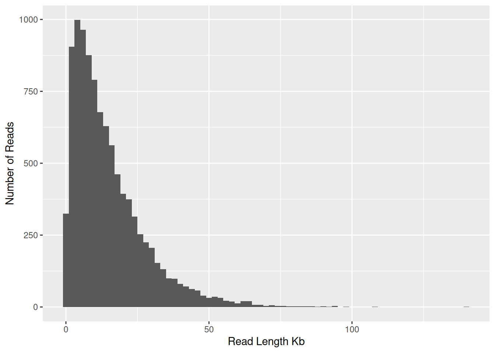
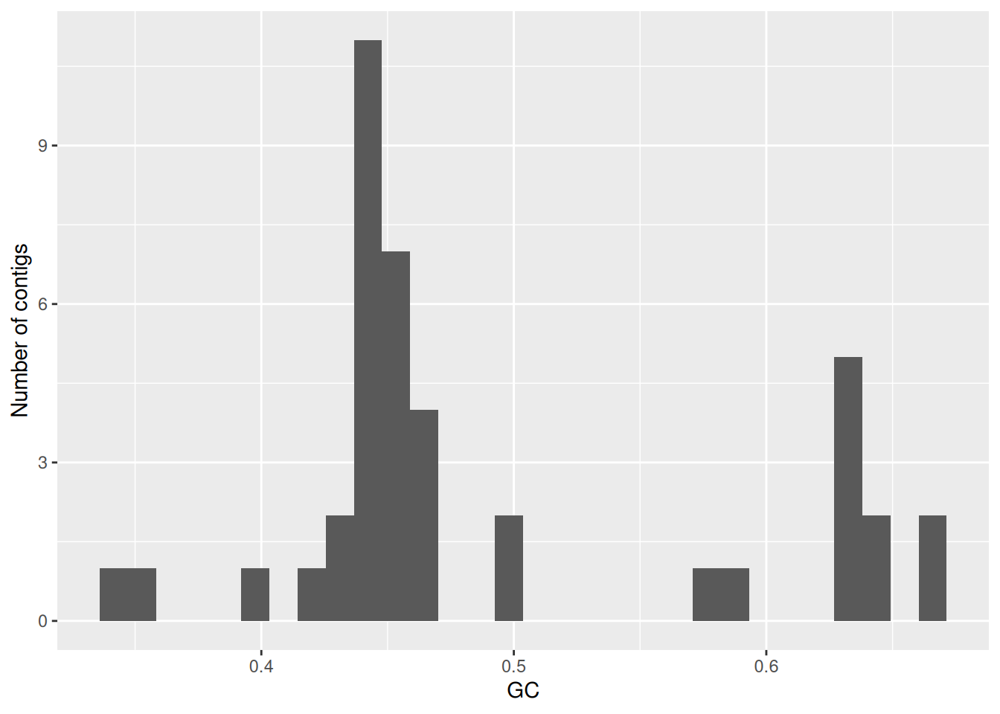
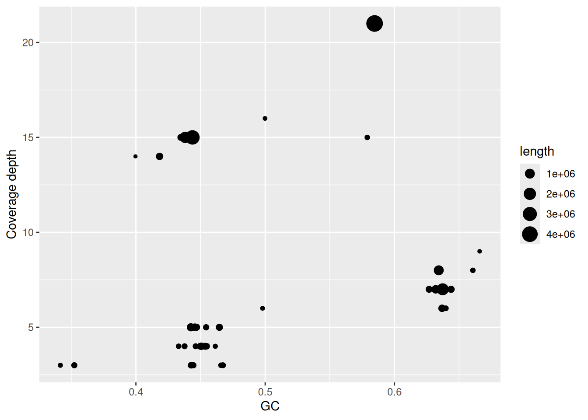
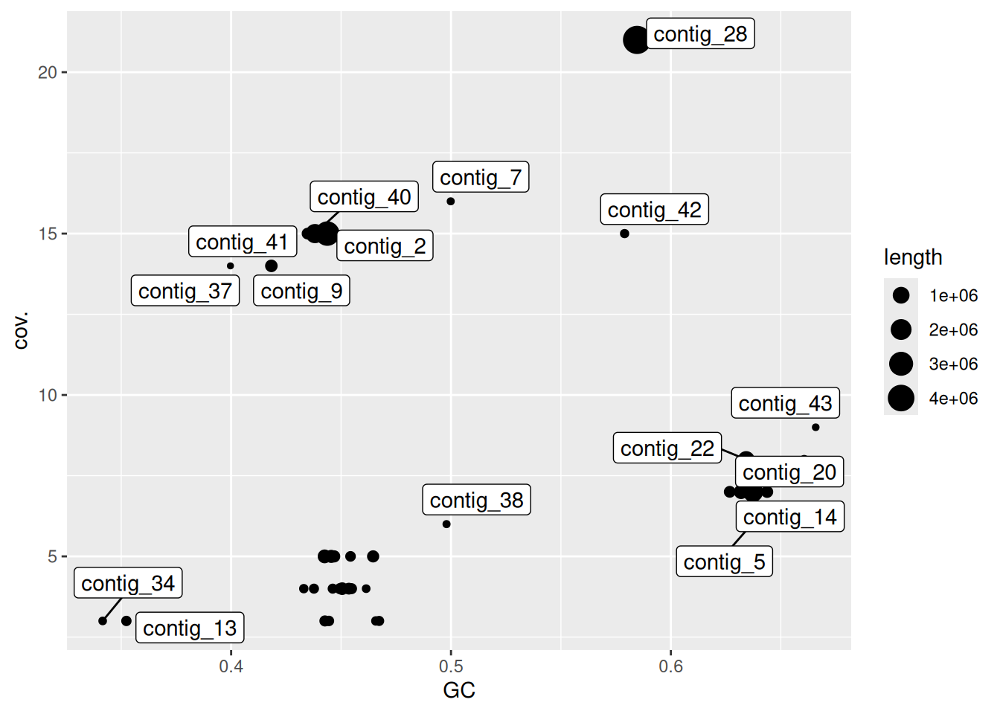

zcat raw_data/raw_reads.fastq.gz | head -n 40000 | bioawk -c fastx '{print $name,length($seq)}' > read_lengths.txtMarine Genomics Workshop 3
Workshop 3 - Metagenome assembly
In this workshop we will assemble a mock metagenome consisting of five bacterial species, which is very simple compared to a real metagenome. Regardless it has been designed to capture some key challenges that are inherited when assembling a metagenome. This includes variable coverage and similar sequences.
For the purposes of metagenomic assembly we note the number of chromosomes, total genome size and its GC content.
When assembling a full metagenomic assembly there will be two additional steps from when we assemble a single bacterial genome. Binning and Bin assessment which are unique to metagenome assembly. The steps are as follows:
- Examine Reads
- Assembly
- Basic assembly QC
- Binning
- Bin assessment
1. Examine Reads
Input data for this exercise consists of simulated reads from an Oxford Nanopore MinION sequencer, the data were simulated using a program called Badread.
Make a new sub directory called raw_reads. Then make a symbolic link to the raw reads file in this directory. Afterwards we can check that all files are correct by using the ls command and -l to show extended details on each file.
Read length distribution
During the assembly process we will take shorter sequences (reads) and attempt to join them into longer sequences, an important determinant of success is the size of the raw reads themselves.
Firstly we need to examine the read length distribution in the input data. The following code unzips the raw data and selects the top 40k lines in the file, and prints the outputs into a file called read_lengths.txt
Then we create a plot to visualize the read lengths.
library(tidyverse)
rl_data <- read_tsv("read_lengths.txt",col_names = c("id","length"), show_col_types = FALSE)
# Histogram of read lengths in the mock nanopore sequencing dataset
ggplot(rl_data, aes(x=length/1000)) +
geom_histogram(binwidth = 2) +
xlab("Read Length Kb") + ylab("Number of Reads")
Calculating read N50
Based on the plot above it is clear that the majority of reads are between 1 and 50kb in length. To summarize this we can use the N50 statistic, although it is more commonly used to summarize genome assemblies, it is also useful for summarizing read length distributions.
N50 is useful as it is unaffected from having a large number of tiny reads and instead places greatest emphasis on the longer reads in the data. We will calculate the read N50 of the sample reads by following the next steps:
- Rank all reads from longest to shortest
- Create a new column with the cumulative sum of read lengths (starting with the longest)
- Find the read at which the cumulative sum surpass 50% of the total read volume (ie. total sum of all read lengths)
total_len <- sum(rl_data$length)
rl_data %>%
arrange(desc(length)) %>%
mutate(cumsum = cumsum(length)) %>%
filter(cumsum>total_len/2) %>%
head(n=1)# A tibble: 1 × 3
id length cumsum
<chr> <dbl> <dbl>
1 c96c1300-8177-e260-d9bd-2fdf75d0146b_2040 22322 74486252The above row describes a single sequencing read which is 22,322 bp long, and cumsum (cumulative sum of read lengths) is often used to figure out thing like “how many of my longest reads do i need to reach X times genome coverage”, here it indicates that the running total of all read lengths so far reaches 74,486,252 bp.
We see here that the N50 of individual reads is about 22kb, which needs to be kept in mind as we perform assembly, and expect that the N50 of the assembly should be considerably grater than this.
2. Assembly
Assuming that we are satisfied with the overall quality of our reads, the first step is to assemble them using flye, as it is probably the best assembler for long-read metagenome data. We will firstly make a flye directory (mkdir) in the project folder and change directory (cd) to this new flye directory and run all flye commands from within this directory.
We will run flye on the simulated data. First we create a new shell script, save it, run it, and monitor the job output (tail -f slurm-xxx.out). Flye will report the read N50, which we can compare with the value we computed earlier.
Once the flye has finished running the outputs will be available in the directory mock. Key outputs are: - assembly.fasta = The actual assembled contigs - assembly_graph.gfa = representation of the assembly graph in gfa format (to be used in bandage) - assembly_graph.gv = assembly graph in graphviz format - assembly_info.txt = table of information on each contig.
Visualize the assembly using bandage
Q1. What is the size and coverage of the largest contig in the assembly? Length: 4,681,059 bp Depth:21.0x
Q2. The assembly should contain at least one (or several) large circular contigs. Based on size and coverage you can guess which contig corresponds to the genome of the most abundant species in the mock community?
Chromosome lengths and GC content in the reference data
We will compare the assembled contigs with reference genomes from the five species that comprise our mock community by tabulating chromosome lengths and their corresponding GC content.
Locating two circular chromosomes for Vibrio alfacsensis in bandage, using the outputs from gc.awk to help with it.
Based on the table the four sequences that match to Vibrio based on the GC, the largest ones are the bacterial chromosomes, whereas the plasmids are the smaller ones. AP024165.1 (3,168,162 bp; 44% GC) and AP024166.1 (1,553,697 bp; 44% GC) are the clearly larger ones and circular chromosomes
3. Basic assembly QC
Previously we used gc.awk to print the length and GC content for reference sequences, now we do the same for the assembled contigs.
Now we can create some plots in R to explore the GC content and coverage depth of contigs. Two of the most useful statistics for grouping cotigs from the same species toghetehr are the GC content and the coverage depth, because these should generally be similar for contigs derived from the same chromosome.
library(tidyverse)
gc <- read_tsv("assembly_check/assembly.gc.tsv",col_names = c("#seq_name","length","GC"))
info <- read_tsv("flye/mock/assembly_info.txt") # join datasets using seq_name
gc_info <- info %>%
left_join(gc)
# plot - histogram of GC content values for assembled contigs in a flye assembly of the mock community dataset
gc_info %>%
ggplot(aes(x=GC)) + geom_histogram() + ylab("Number of contigs")
The following code and graph display a plot of GC vs coverage which helps identify clusters that have similar values for both parameters. By making this plot we filter the data to remove contigs with unrealistically high GC content and very high coverage depth (probably repeats)
# plot - coverage and GC content assembled contigs in the mock community assembly. Contig lengths are shown through point size
gc_info %>%
filter(GC<0.8) %>%
filter(cov.<25) %>%
ggplot(aes(x=GC,y=cov.)) + geom_point(aes(size=length)) + ylab("Coverage depth")
# adding labels to look at the contigs with highest coverage and compare with contigs in bandage.
library(ggrepel)
gc_info %>%
filter(GC<0.8) %>%
filter(cov.<25) %>%
ggplot(aes(x=GC,y=cov.)) + geom_point(aes(size=length)) + geom_label_repel(aes(label=`#seq_name`))
The cluster of contigs with high GC content (>60%) points towards Desulfovibrio sulfodismutans, while the coverage depth around 7.5x is likely to correspond to a different species, Vibrio algicola, with a much lower GC content
Assembly size vs reference size
Since the mock metagenome has a precisely known composition we can asses its completeness by comparing the length of our assembly with that of the reference. Which can be done from within our top-level project directory.
Firstly we calculate the total length of our reference sequences. Which tells us the total length is around 24Mb.
cat /pvol/data/mg/refs/*.fna | bioawk -c fastx -f gc.awk | awk '{sum+=$2}END{print sum}'4. Binning
One of the most challenging tasks in metagenomic assembly is separating sequences from many different organisms present in the sample. The tools that can be used fall into two categories: 1. Read binning tools - group the raw (unassembled) reads 2. Contig binning tools - group assembled contigs
In both cases the resulting outputs are bins, and each of these contain multiple distinct sequences (reads or contigs) that come from the same organism. Common errors from binning include: 1. Placing two sequences together when they come from different taxa - leads to contamination 2. Failing to group sequences that come from the same taxon - leads to fragmentation.
For this exercise we will perform contig binning since we have long-reads and can rely on metaFlye to assemble high quality contigs from a mixed collection of reads.
By using the program metabat2, which tries to group contigs based on nucleotide composition and read coverage, and uses the tetranucleotide frequency as well. For simplicity we will use the coverage information calculated by flye and provide it to metabat.
Firstly we create a directory for our binning work and change to it. Creating the metabat directory within the top-level of the project.
# input file summarising read depth info for all contigs
cat ../flye/mock/assembly_info.txt | grep -v '#' | awk '{OFS="\t";print $1,$3}' > depths.txt
# crate new version of the assembly file in which the contigs have the same order as those in the depths.txt file
cat depths.txt | awk '{print $1}' | xargs samtools faidx ../flye/mock/assembly.fasta > assembly_ordered.fasta
# run metabat
metabat2 -i assembly_ordered.fasta -a depths.txt --cvExt -o bins/metabat --seed 5The bins directory will contain multi-fasta files with each of the bins inferred by metabat. To inspect which contigs were grouped into which bin we can use the command grep.
From the output we can see that metabat has grouped contigs into 5 bins. If we compare the contigs in these bins with those shown in bandage we can see that the largest and highest coverage contig were not included.
5. Check bin quality with checkM
The program checkM will be used to assess the quality of our bins. Each of these bins generated by metabat should represent a single species or strain within our community. The goal now is to create bins in which: 1. The sequences within the bin contain the complete sequence for this organism 2. The sequences within the bin all come from the same organism and are not contaminated with sequences from other taxa.
We can assess the degree to which our binning and assembly has achieved these goals by using checkM. We first create a directory within the top level of the project folder for running checkM and change into it.
Here we prepare inputs for checkM, copying over the bins from metabat. We also need to include the longest contig in bins, we extract this contig from our assembly and include it with our metabat bins.
# largest contig number might change.
samtools faidx ../flye/mock/assembly.fasta contig_28 > bins/contig_28.faAfterwards create a slurm job script and save it within the checkm directory, and then run the file. After it finishes processing the file look at the resulsts. It will include a summary of the results for each of the bins, including: - Marker Lineage (approximate taxonomic classification) - no. genomes (no. of reference genomes used to infer marker set) - no. markers (no. inferred marker genes) - no. sets (no. inferred co-located marker sets) - 0-5+ (no. of times each marker gene is identified) - Completeness (calculated by taking the no. marker genes appearing exactly 1 time and divided by the total) - Contamination (no. of marker genes appearing >1 times divided by the total) - Strain heterogeneity (calculated by examining the marker genes appearing >1 times and determining the proportion of these that are from the same or very similar organisms/strains)
QUESTION: Which bin has the highest level of contamination? and why might this be?
The bin with the highest level of contamination is ” metabat.5” classified as f__Vibrionaceae (UID4865) with a contamination of 1.33%. It has the highest contamination because it is likely that the mock community contains two closely related Vibrio species, which share many similar marker genes. This can be supported by the strain heterogeneity value (26.09%), suggesting the contamination arises from closely related stains grouped into the same bin.